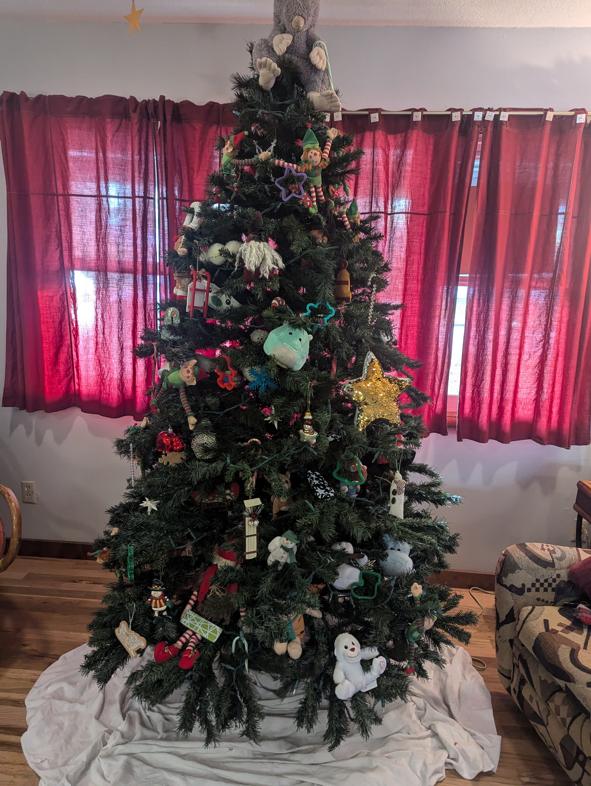
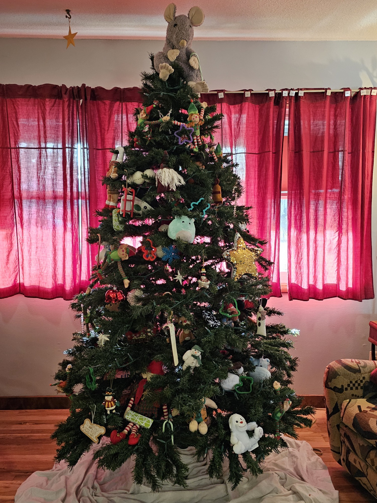

Here are two slightly different perspectives on the same set of objects. Some are easier to see in one than the other, so dealers choice.
13th of Dec: 1 blue snowflake, 4 sleds (of any kind), 3 hippos, 1 green tie
15th of Dec: 5 more snowflake, 1 fallen snowman, 7 stars, 3 characters from Rudolph the Rednose Reindeer (1964), a heart for a nose
18th of Dec: 8, 9, or maybe 10 more snowmen, 1 jumbo candycane, 6 cookie cutters, 3 ginerbread men, where's Waldo?
20th of Dec: 7 additional candycane, 6 noisemakers, 9 elves (not Santa), Dora the Explorer, Fred Flintstone